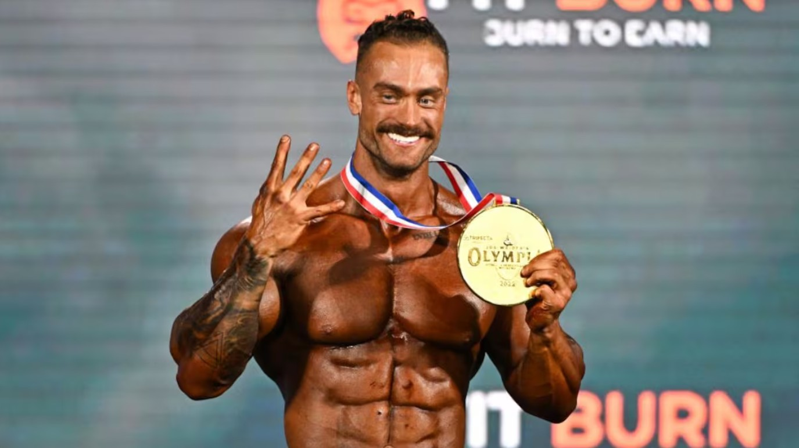
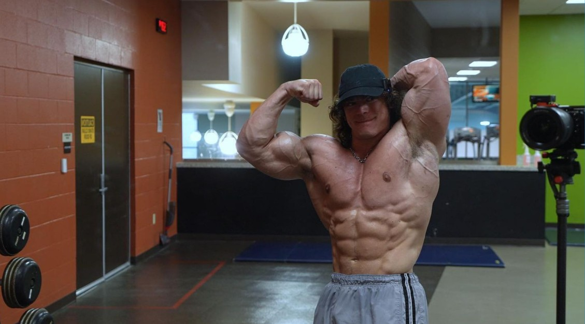
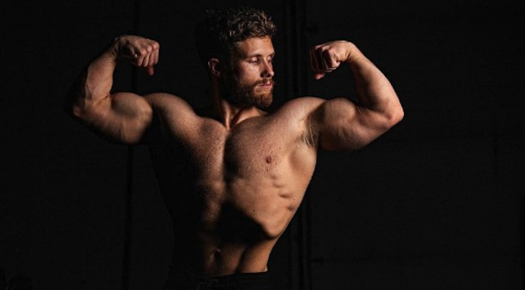

Learn the proper technique, training science, and gym knowledge from trusted experts.
Instead of guessing from random TikToks, these creators teach why you train - not just what to do.

Chris Bumstead (CBUM)
Chris Bumstead (CBUM) is a multi-time Mr. Olympia Classic Physique champion known for structured bodybuilding training and consistent discipline.

Sam Sulek
Sam Sulek shares long, unfiltered training sessions that highlight intensity, effort, and consistency in the gym. His videos demonstrate how hard work, frequent training, and staying consistent over time drive results.

Jeff Nippard
Jeff Nippard teaches evidence-based training using biomechanics and research. His content breaks down exercises step-by-step and explains why they work, helping lifters train efficiently while reducing injury risk.
🎯 How To Use This Page
Pick a goal (build muscle, lost fat, build strength)
Choose a creator that matches your style
Watch videos and learn before your workout
Apply new concepts each training section.
Learn how to implement cardio into your workouts
Learn the science behind what makes your muscles grow